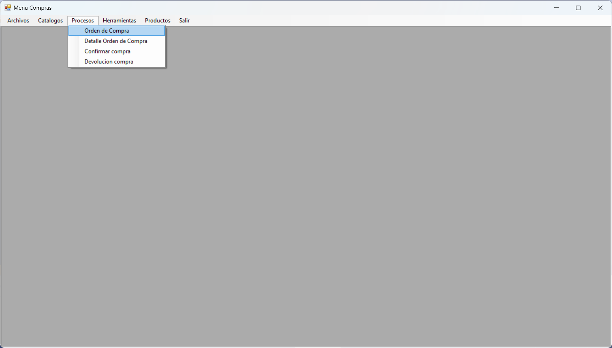
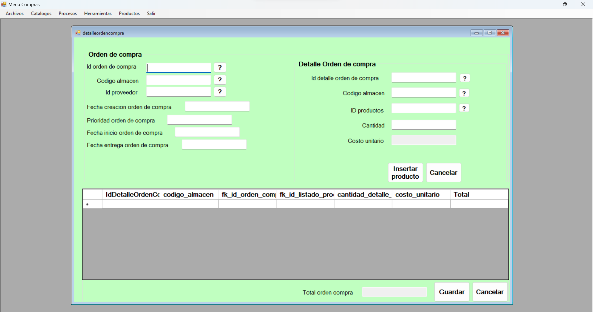
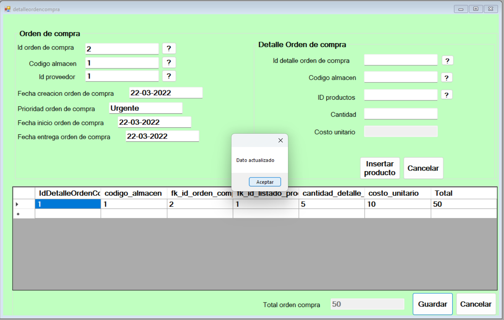

Proceso compra
El proceso de compra tiene como objetivo generar una compra y agregar los productos al inventario.
Formulario
En la siguiente figura podemos observar los campos por llenar en el formulario de compra.
Agregar detalle de compra
Ahora se puede observar que boton se debe de presionar para poder añadir un producto en detalle de compra y se puede visualizar que este aparece en la tabla de abajo.

Creación de compra
Seguido de esto el boton por presionar es el siguiente para completar y crear lacompra.
